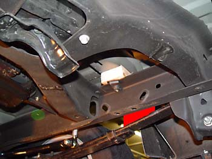
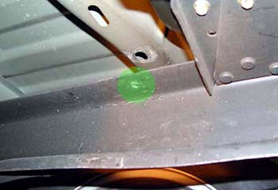
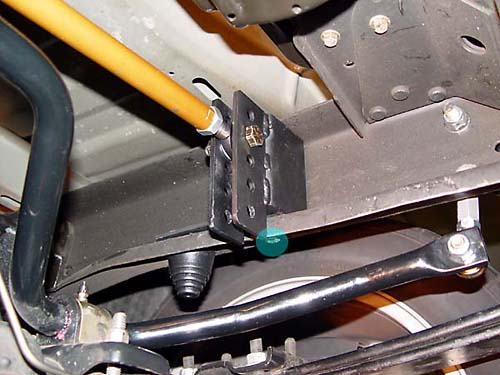
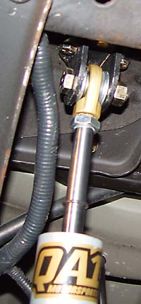
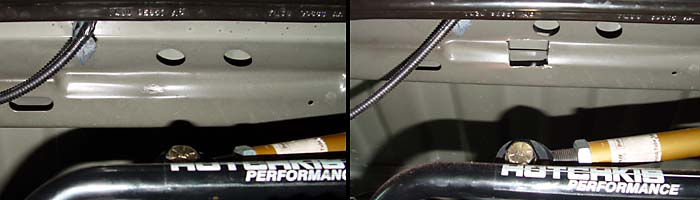

|
Panhard Bar Installation |
|
Raise the bed with an 18" 2 X 4 at the spot between the leaf and the frame shown in red. Slip a 3" piece of 2X4 in between the rear bad bulkhead and the from. The top panhard mount bolt location is shown in green. There is a rubber grommet there with a hollow shaft that the bolt can slip through. The hole in the bed then slips down over the bolt head.   The bracket must be drilled through for the bump stop stud. The bottom bolt hole (shown in blue below) must also be drilled.   Now is a good time to install Ruslow's heim joint upper shock mounts (shown above right). With the custom mounts, shock removal is now two bolts from done. Finally, if your truck is lowered, the panhard mount may strike one of the bed supports as shown in the photo to the left below. I took a Dremel with a heavy duty cutting wheel and cut out a bit of metal: 
|